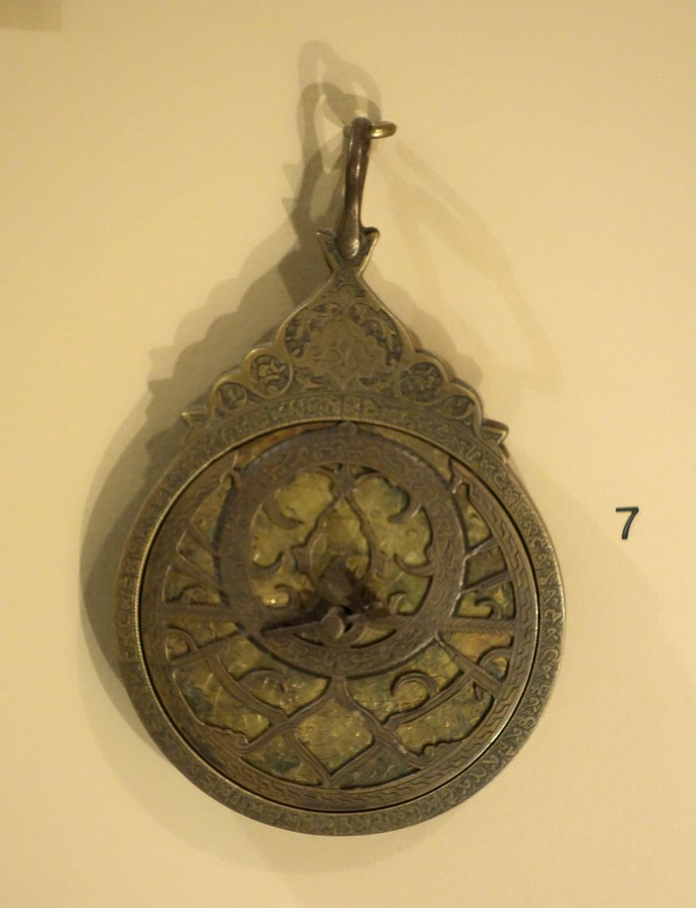

Packing list
Pack for the century.
Every era has a dress code, and none of them is “whatever was clean.”
Tick items as you pack. Your list is saved on this device. Items marked Prop are imaginary devices from the world of CHRONOTERRA; they are not real equipment.
